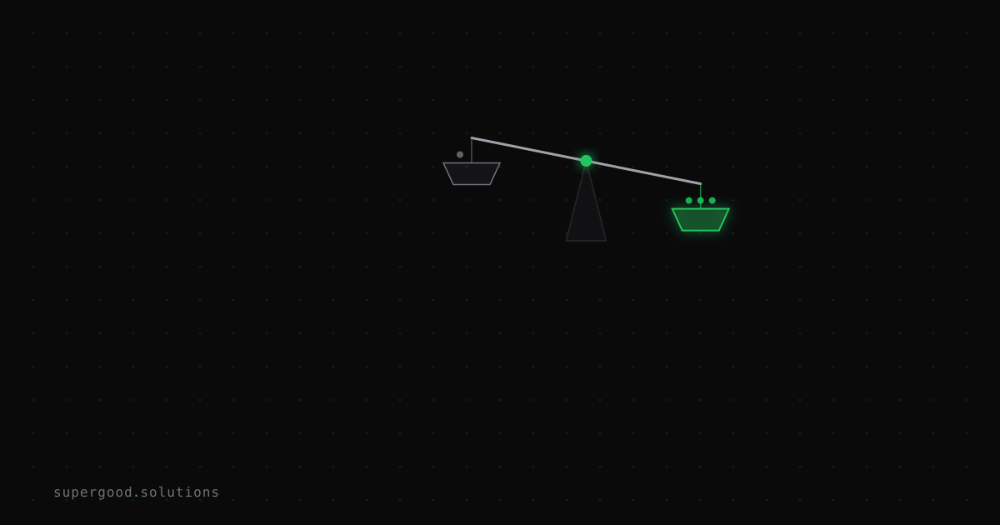

The Free Model Upgrade Won't Save Your AI Strategy
TL;DR: For two years, the cheapest way to fix a bad AI product was to wait — the next model release would quietly paper over sloppy prompts and thin context handling. That subsidy is drying up, and teams that never built real harness or context discipline are about to feel it.
Key Insight
The dominant strategy in most AI teams hasn't been "build a good system." It's been "build an adequate system and let the next model bail you out." When Drew Breunig described the industry's mood before Anthropic's Fable model landed, he put it bluntly: "it felt silly to waste too much time improving your coding harness or context strategies. A new model would arrive at the same price (or cheaper!) and paper over most of your problems." Simon Willison picked the line up the same day because it named something a lot of practitioners had been quietly relying on without saying out loud.
Fable changed the math. It was a real capability jump, but at a price point where Opus-tier and even open-weight models like GLM were "good enough" for most of the actual work. That forced a question teams had been avoiding: which work needs the frontier model, and which work needs a better harness? Latent Space's writeup on agent harness evolution makes the complementary point — as models absorb more control logic into their weights, the harness that survives isn't the one babysitting the model, it's the one managing the scarce resource: human attention.
Why Teams Miss This
Most teams read "model upgrades keep getting better" as permission to skip investment in context engineering, retrieval quality, and evaluation infrastructure. The logic seemed sound for a while — why spend engineering hours pruning context windows or building eval harnesses when GPT-5, Claude, or Gemini's next release would just get less brittle on its own?
The problem is that this bet was never about model quality — it was about model price-to-quality ratio staying on a steep, cheap-and-improving curve indefinitely. When a frontier release like Fable arrives at a materially higher price for a materially better result, the free ride stops. Suddenly the sloppy context window that used to "just work" because the model was forgiving is the thing burning your budget on the expensive model, or producing degraded output on the cheap one. The technical debt didn't go away during the free-upgrade years — it went dormant, and it's now load-bearing.
How to Actually Do It
Stop treating "which model" as your primary lever and start treating "what does the model actually see" as the one you control:
- Audit context before you audit prompts. For your top 3 production workflows, log the actual token payload sent to the model — not the template, the rendered output. Most teams find 30-50% of it is stale retrieval results, redundant system instructions, or tool schemas the model never uses for that call.
2. Split workloads by what they actually need. Route classification, extraction, and structured transforms to a cheap fast model. Reserve frontier spend for the steps where reasoning quality changes the outcome — multi-step planning, ambiguous judgment calls, code review on unfamiliar systems.
# crude but effective: route by task shape, not by default
def pick_model(task):
if task.type in ("extract", "classify", "format"):
return "cheap-fast-model"
if task.requires_multi_step_reasoning or task.is_novel:
return "frontier-model"
return "mid-tier-model"3. Build the eval harness before you need it. If you can't answer "did our last context change help or hurt?" with a number, you're flying on vibes and the next model swap will hide the answer either way.
4. Treat context window size as a budget, not a feature. A bigger window doesn't mean stuff more in — it means you have more room to be careless. Willison and Breunig's broader body of work on "context rot" (see Breunig's How Long Contexts Fail) documents specific failure patterns worth checking your own pipelines against: distraction, confusion, and poisoning from unpruned history.
What We've Learned
The next experiment worth running: pick one production agent, log its real context payload for a day, and cut it by a third without touching the model. If output quality holds, you just found the technical debt that was hiding behind a subsidized upgrade path — and you found it before a price hike or a plateau made you find it the hard way.
Sources
- Primary source: Fable & The End of the Free Lunch — Drew Breunig
- Commentary: Simon Willison on Drew Breunig, Aug 23 2026
- Context: The Evolution of the Agent Harness — Latent Space
- Background reading: Simon Willison's context-engineering tag, feat. Drew Breunig's context rot patterns
Have a specific workflow in mind?
Bring it to a Quick Scan — a live working session where we'll tell you honestly whether it should be an agent, a workflow, or left alone, before you spend a dollar building it. You get 3 prioritized recommendations on the call, a one-page summary after, and the $500 credited toward any engagement within 30 days.
Get new posts + practical agent-ops notes
One email when something new goes up. No nurture sequence, no spam — unsubscribe whenever you want.